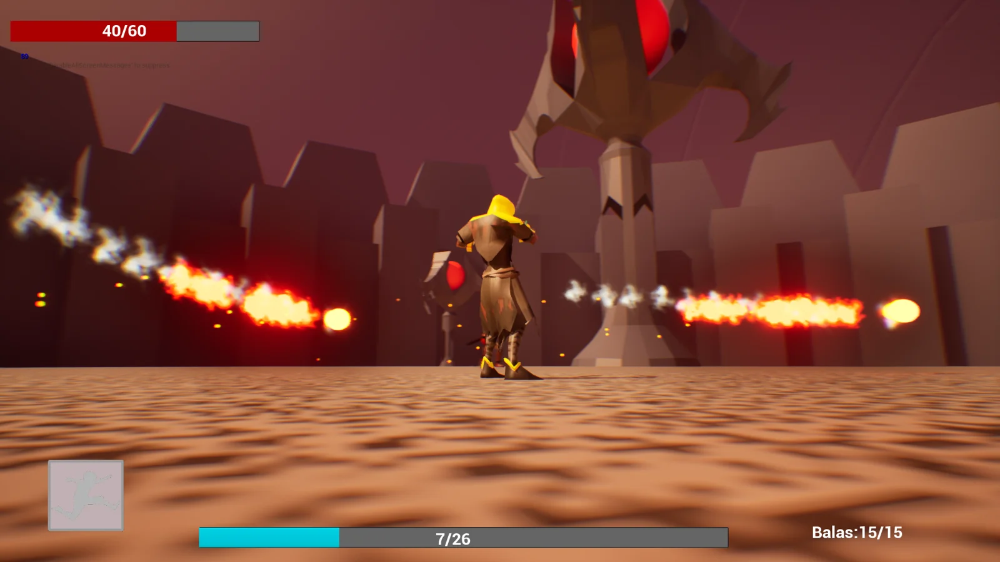

DISEÑO Y DESARROLLO DE VIDEOJUEGOS
Aprender creando.
Crear para jugar.
Soy estudiante universitario de Diseño y Desarrollo de Videojuegos. Aquí reúno mis juegos y proyectos: ideas que puedes explorar y jugar.

01 / PROYECTO DESTACADOWINDOWS ↗
ACCIÓN · SURVIVOR-LIKE
They Won’t
Retain Me
Hordas infernales. Habilidades que se combinan. Una nueva oportunidad en cada partida.
En desarrollo
Explorar el proyecto ↗EXPLORA LO QUE HE CREADO
Proyectos.
DETRÁS DE LOS JUEGOS
Un portfolio.
Un aprendizaje
en marcha.
Estudio Diseño y Desarrollo de Videojuegos en la universidad.
Este espacio reúne mis proyectos publicados en itch.io. Es una forma de compartir lo que voy creando durante mi formación y de dejar que los juegos hablen por sí mismos.
En la selección conviven una aventura 2D, un laberinto, un juego infinito y un survivor-like en desarrollo. Puedes consultar cada ficha y acceder a su versión disponible.
LuCaS25GG ESTUDIANTE · CREADOR EN ITCH.IO
SIGUE EXPLORANDO
La siguiente partida
empieza en itch.io ↗
Visita mi perfil para jugar y seguir las novedades de mis proyectos.